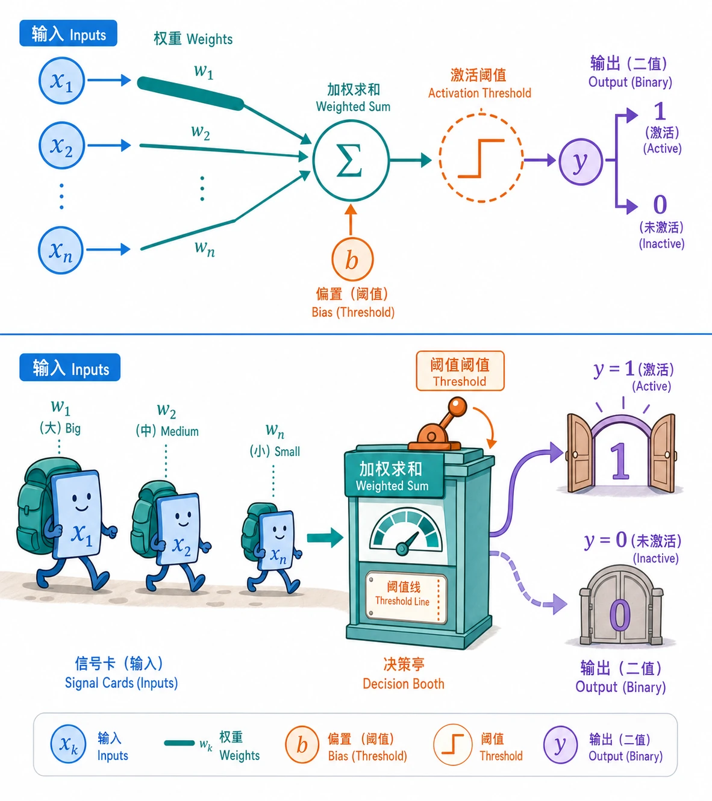

感知机与多层网络
前置知识：基本编程经验。数学符号不熟悉可随时查阅 附录：数学基础速览。
本节目标：知道神经网络最基本的单元怎样做判断，为什么单个感知机能力有限，以及多层网络为什么能处理更复杂的问题。
1. 神经元：一个会打分的决策器
人工神经元不是一个迷你大脑。更准确地说，它像一个很简单的打分器：收集几个信号，给每个信号分配重要程度，把分数加起来，再决定要不要输出。
想象你早上出门前判断要不要带伞：
- 天气预报说要下雨，你很信它，所以权重高。
- 窗外有云，也算一个信号，但没那么可靠。
- 同事说今天肯定不下雨，但他昨天也判断错了，所以权重低。
你会把这些信息综合起来。如果“下雨风险总分”超过某个线，就带伞；没超过，就不带。
天气预报说下雨 ──(重要)──┐
├──→ 加权求和 ──→ 超过阈值？──→ 带伞 / 不带伞
窗外有云 ────────(一般)──┤
│
同事说不下雨 ───(较低)──┘这就是感知机的核心逻辑：
- 输入：外部给它的信号，比如天气预报、窗外云量。
- 权重：每个信号有多重要。
- 偏置：整体判断的松紧程度。偏置越大或越小，等于把“带伞门槛”往一边挪。
- 激活函数：最后那道判断规则，比如“超过门槛就输出 1，否则输出 0”。
- 输出：判断结果。
用公式写就是：
公式不用怕。它只是在说：先把输入按重要程度加起来，再交给一个规则决定输出。

2. 为什么叫“神经网络”
早期研究者确实借鉴了生物神经元：神经元接收信号，累积到一定程度后触发输出。人工神经元里的“加权求和 + 激活”就是这个过程的简化版本。
但现代神经网络并不是生物大脑的复刻。它和大脑的关系，更像飞机和鸟：最初有启发关系，但真正的工作方式已经完全工程化。学习神经网络时，把“神经”理解成历史沿用的名字就够了。
3. 感知机擅长什么：画一条分界线
单个感知机最擅长做一种事：用一条线把两类东西分开。
比如判断一个水果是不是苹果。模型可能看两个输入：
- 颜色接近红色吗？
- 形状接近圆形吗？
如果“红”和“圆”的综合分数够高，就判断为苹果；否则不是。
从几何上看，感知机是在空间里画一条分界线：
红色程度
高 | 苹果
| /
| / ← 分界线
| /
低 | 不是苹果
+----------------
低 高
圆形程度二维里是直线，高维里叫“超平面”。名字听起来吓人，本质还是一条分界：一边输出 1，另一边输出 0。
这类能被一条线分开的任务，叫线性可分问题。AND、OR 这类简单逻辑门就属于这一类。
4. 单个感知机的天花板：XOR 问题
问题来了：不是所有东西都能被一条线分开。
最经典的例子是 XOR，也就是“两个输入不一样时输出 1，一样时输出 0”：
XOR
x2
1 | 1 0
|
0 | 0 1
+--------→ x1
0 1左下角和右上角是一类，左上角和右下角是另一类。你无论怎么画一条直线，都没法把它们干净分开。
这说明单个感知机只会做很简单的边界判断。它不是“不够聪明”，而是工具本身太简单：只有一条线，当然画不出弯弯绕绕的边界。
1969 年 Minsky 和 Papert 在《Perceptrons》中系统指出了这个限制，这也让当时的神经网络热潮被泼了一盆冷水。后来真正的出路是：别只用一个感知机，把很多个叠起来。
5. 多层网络：把简单判断拼成复杂判断
多层感知机（Multi-Layer Perceptron, MLP）就是把很多人工神经元按层连接起来。
输入层 隐藏层 输出层
原始信号 ──→ 中间特征加工 ──→ 最终判断可以把它想成一个分工流水线：
- 输入层：接收原始信息，比如颜色、形状、价格、文本 token。
- 隐藏层：一层层提炼中间特征。前面的层学简单模式，后面的层组合出更复杂的模式。
- 输出层：给出最后答案，比如分类、分数、概率。
“隐藏层”不是神秘机关，只是它的结果不直接展示给用户看。它们在内部帮助模型把原始输入加工成更有用的表示。
为什么多层有用？因为每个神经元只能做一个很简单的判断，但很多简单判断组合起来，就能拼出复杂边界。
类比一下：一块积木很简单，但很多积木按合适方式拼起来，就能搭出房子、桥、城堡。单个神经元像一块积木，多层网络就是一套积木系统。
6. “多层”真正变强的关键：非线性
只把很多线性层叠起来还不够。因为线性变换叠再多层，本质上仍然可以合并成一个线性变换。
也就是说：
没有激活函数：
100 层线性网络 ≈ 1 层线性网络这就像你把很多透明直尺叠在一起，它还是只能画直线。
真正让多层网络变强的是激活函数。它给网络加入“拐弯能力”，让模型不再只能画直线，而是能组合出曲线、区域和更复杂的关系。
所以多层网络的基本节奏是：
加权求和 → 激活函数 → 加权求和 → 激活函数 → ... → 输出下一节会专门讲激活函数。
7. 万能近似定理到底在说什么
神经网络里有一个很有名的结论：万能近似定理。
它的大意是：只要隐藏层足够大，并且使用合适的非线性激活函数，神经网络理论上可以逼近非常广泛的连续函数。
这句话可以翻译成更直白的版本：
神经网络这套积木，理论上能拼出很多复杂形状。
但这里有两个限制一定要记住：
- 它说的是“理论上存在”，不是说训练时一定能找到。
- 它不代表层数越多、神经元越多就一定越好。
现实里的训练还要看数据、损失函数、优化算法、计算资源和模型结构。神经网络强大，但不是把层数堆高就自动聪明。
8. 前向传播：答案怎么一路算出来
当一个输入进入神经网络时，它会从前往后经过每一层，这个过程叫前向传播。
可以把它理解成一次流水线加工：
- 输入层接收原始数据。
- 每个隐藏层做一次“加权求和 + 激活”。
- 输出层给出最后结果。
用一个简单的两层网络表示：
这里的 $W$ 是权重，$b$ 是偏置，$f$ 和 $g$ 是激活函数。读公式时抓住主线即可：每一层都在把上一层的结果重新组合，再交给下一层。
前向传播负责“算答案”。至于模型算错以后，怎样把错误分摊回每一层、每个参数，再把它们调好，那就是后面要讲的反向传播。